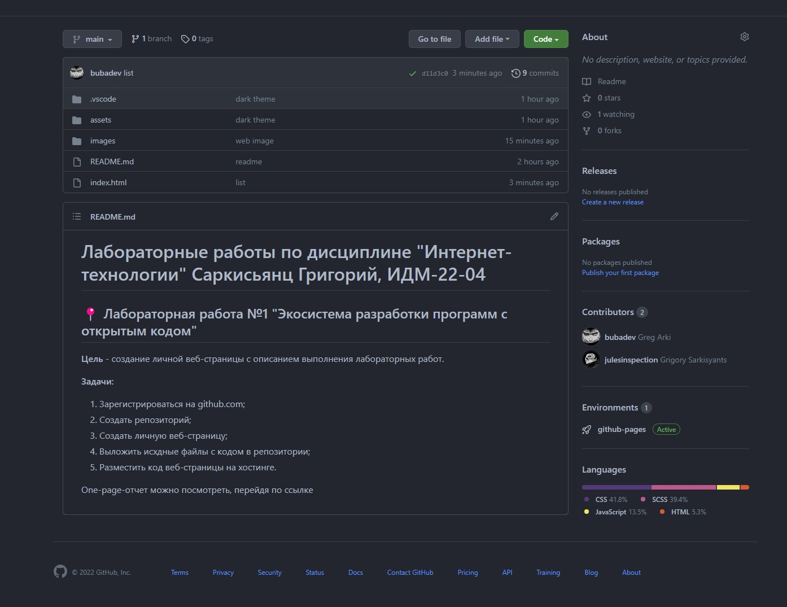
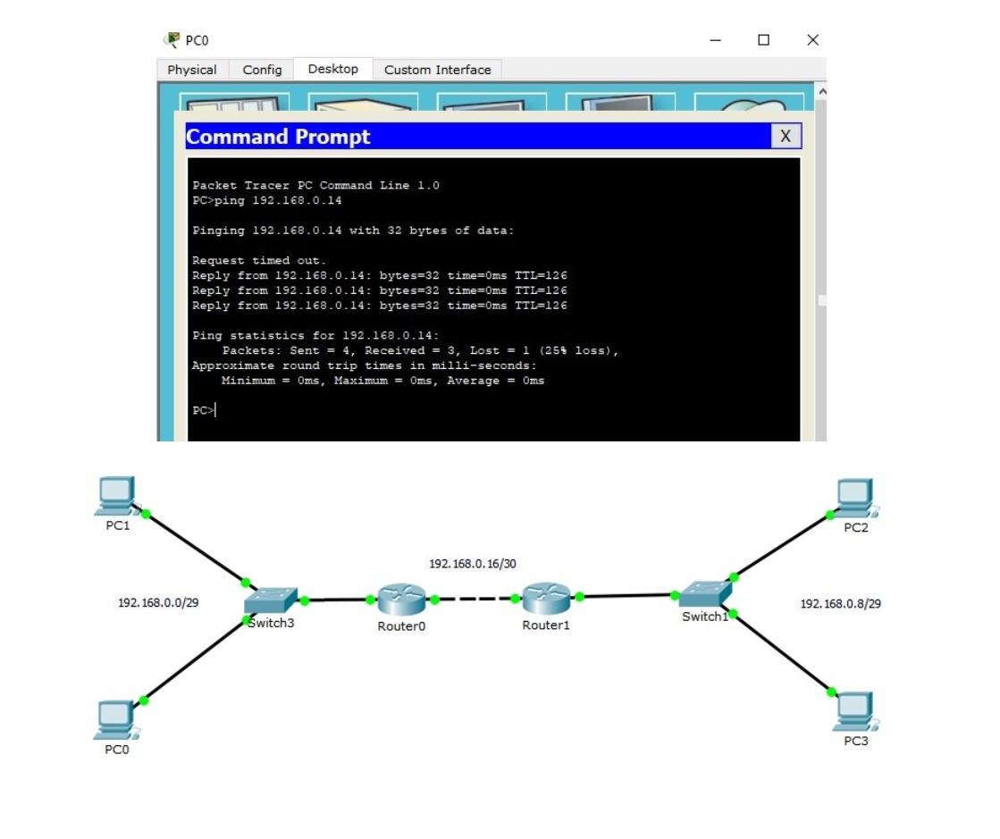

Саркисьянц Григорий
МГТУ Станкин, группа ИДМ-22-04
МГТУ Станкин, группа ИДМ-22-04
Цель работы - создание onepage-отчета по лабораторным работам на GitHub и работа с Git.

Задачи работы:Цель работы - разработка простого приложения в составе команды.
8. Майя Исии - ответственная за консалтинг
Цель работы - настройка коммутаторов и маршрутизаторов для осуществления работоспособности локальной сети
